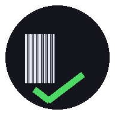

Rifle Stock Check
Loading…

Load your rifle stock CSV
Default filter is
Condition = New
. You can then filter by
Model
(exact match) and start scanning.
Import CSV
How to install
Condition
New (default)
Used
All
Model (exact match)
—
Expected
0
Scanned
0
Missing
0
Scan Barcode
Replace CSV
Export Filtered (with Missing)
Export All (Scanned column)
Reset Check
Remove saved CSV
Install help
Missing
Scanned
All Filtered
Scan barcode
Close
—
Manual entry (fallback)
Add
Map CSV columns
We couldn’t auto-detect your column names. Pick which columns are Stock Number, Condition and Model.
Save mapping
Cancel
Install on iPhone (Home Screen)
Close